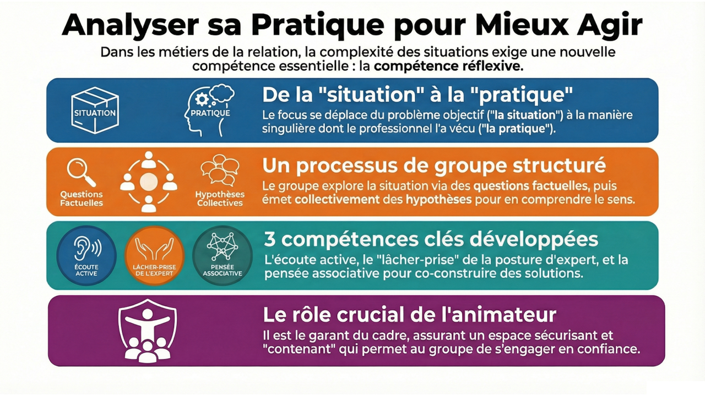
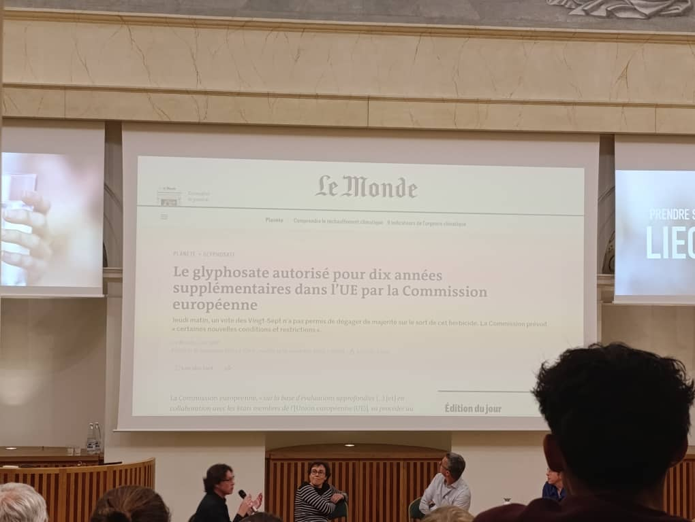
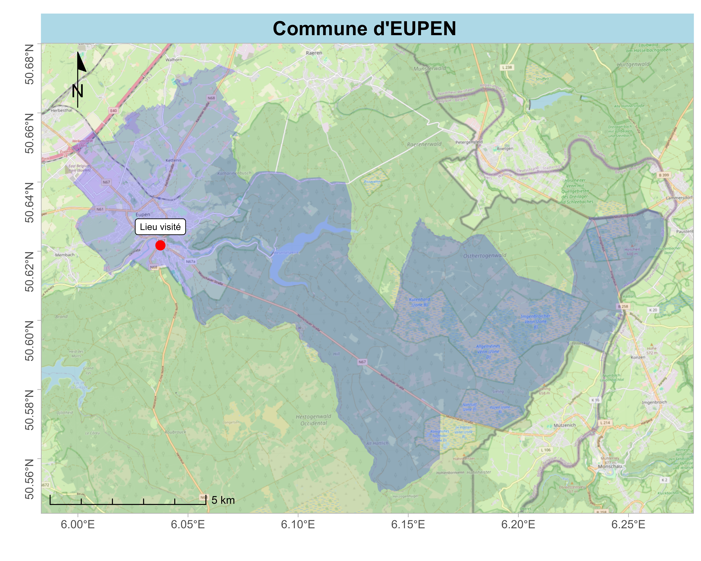

20 Gouvernance, planification d’urgence, résilience et adaptation – REX
Ce module ferme le bloc « de l’urgence à la résilience ». Il porte sur la gouvernance des risques, la planification d’urgence, la résilience et l’adaptation, et il s’évalue par le retour d’expérience plus que par la restitution de cours. Deux livrables le structurent : un rapport individuel d’analyse réflexive sur des activités suivies (conférences, sortie de terrain), et un travail de groupe, ici une proposition de projet humanitaire de préparation aux catastrophes au Hodh el Chargui, en Mauritanie. Les deux partagent une même conviction, héritée de l’Anthropocène : face à des crises qui franchissent les frontières administratives et produisent des effets en cascade (Crutzen, 2002 ; UNDRR, 2019), la vulnérabilité ne dépend pas seulement de l’aléa, mais des modes de gouvernance, des inégalités d’accès aux ressources et des capacités d’action propres à chaque territoire (Parmesan et al., 2022).
20.1 L’analyse réflexive comme méthode
L’évaluation du module repose sur l’analyse réflexive, une compétence professionnelle avant d’être un exercice scolaire. Suivant Clerc et Agogué (2014), elle ne juge pas une action passée : elle cherche à comprendre, selon la formule de Perrenoud, « comment on s’y prend » dans son travail, en passant d’une posture explicative, qui cherche des solutions immédiates, à une posture compréhensive, qui interroge le sens de nos pratiques.

La séance type se déroule en six phases. Les trois premières posent le cadre et conduisent l’analyse ; les trois dernières servent à prendre du recul.
- Poser le cadre de confiance. L’animateur se présente comme garant du cadre, pas comme expert qui apporte des solutions. Le groupe devient un lieu de co-élaboration.
- Clarifier les intentions et les règles. Anonymat, confidentialité, non-jugement, bienveillance sans complaisance : des règles qui autorisent à parler sans se défendre.
- Le protocole d’analyse. On part d’une situation exposée par un narrateur, on l’objective par des questions factuelles en différant l’interprétation, puis chacun propose des hypothèses de compréhension. Le but est de co-construire une lecture, pas de trouver la bonne solution.
- Le temps de l’exposant. Le narrateur dit ce qu’il retient et commence à percevoir son propre style professionnel.
- Le temps du groupe. Le collectif revient sur les enjeux révélés (psychiques, organisationnels, institutionnels).
- La méta-analyse. On regarde enfin comment le groupe a travaillé : ses hésitations, ses accélérations, ce qui a fait avancer la pensée.
Ce dispositif n’est pas une procédure de plus. C’est un cadre qui crée les conditions, confiance et sécurité, pour qu’une posture réflexive s’installe durablement. C’est cette posture que les sections suivantes mettent au travail sur des situations concrètes.
20.2 Conférences et séminaires
Le module ouvre sur un cycle de conférences publiques et de séminaires. Plusieurs reviennent à une même question de gouvernance : comment une société décide-t-elle de ce qu’elle juge acceptable, et pour qui.
20.2.1 Risque chimique : PFAS et pesticides

La conférence du 25 septembre 2025 (ULiège) s’est ouverte sur un extrait de Dark Waters, qui retrace le combat de l’avocat Rob Bilott pour faire reconnaître la toxicité des PFAS face au groupe DuPont. D’emblée, le débat situait les pollutions chimiques à la croisée du scientifique, du juridique, du sanitaire et du politique.
Les pesticides et les PFAS partagent une même trajectoire : une utilité industrielle réelle, une contamination devenue généralisée, et un décalage persistant entre ce que la science établit et ce que la réglementation protège. Les PFAS, ces « polluants éternels » liés par une liaison carbone-fluor parmi les plus stables de la chimie organique, s’accumulent dans l’eau, les sols et l’organisme, et persistent des décennies. Les études d’imprégnation menées autour de territoires d’agriculture intensive (La Rochelle, Sainte-Pazanne) y détectent de nombreuses molécules, avec des regroupements de cancers pédiatriques supérieurs à la moyenne dans certaines zones.
Trois constats ont structuré les échanges. D’abord, une défaillance réglementaire : le glyphosate, classé « cancérogène probable » par le CIRC en 2015, a été réautorisé pour dix ans dans l’Union européenne en 2023, malgré plus de 100 000 procès aux États-Unis. Ensuite, une « fabrique du doute » documentée : lobbying massif (plus de 5 600 contributions à la consultation européenne sur la restriction des PFAS), ghostwriting d’études, dissimulation de données (3M savait dès 1975 que les PFAS s’accumulaient dans le sang humain). Enfin, des contre-pouvoirs émergents : le Forever Pollution Project, qui a cartographié des centaines de sites contaminés en Europe et rendu visible l’écart entre les normes et les concentrations réelles, par exemple sur le site 3M d’Anvers, parmi les plus pollués du continent.
La leçon de fond est que dépolluer après coup est largement illusoire. Pour des molécules aussi persistantes, la seule stratégie efficace est de fermer le robinet à la source, ce qui suppose, pour les pesticides, de transformer le modèle agricole lui-même.
L’intervention la plus marquante pour moi est venue d’un participant burkinabè, à propos du diuron. Cette substance, interdite dans l’Union européenne depuis 2007, reste produite et exportée. Son usage ailleurs, dans des pays moins armés pour le contrôler et en soigner les effets, déplace le problème sans le résoudre. C’est l’illustration d’une mondialisation asymétrique du risque chimique, et le point de départ de l’angle ouest-africain développé plus bas.
20.2.3 Résilience alimentaire et sécurité nationale
Un séminaire animé autour de Stéphane Linou a déplacé la question alimentaire vers la planification d’urgence. L’idée, simple mais peu présente dans les plans de sécurité civile, est qu’une rupture d’approvisionnement (cyberattaque, blocage logistique) laisse les villes avec quelques jours de stock seulement. La résilience alimentaire devient alors un enjeu de sécurité. La journée s’est conclue par un stress test sous forme de jeu sérieux : supermarchés fermés, que se passe-t-il dans les heures qui suivent, que peut faire l’échelon communal ? Un « défi » de relocalisation accompagnait la réflexion : composer un repas à trois services pour 9,50 € maximum, sous 1,6 kg de CO₂ par assiette, avec des aliments produits dans un rayon de 51 km. L’exercice a surtout révélé la difficulté concrète à identifier les producteurs locaux et la faiblesse de l’offre hors saison, un rappel utile que la relocalisation se décrète moins qu’elle ne se construit.
20.2.4 Préparation humanitaire et métiers de l’aide
Un volet du module, à Namur, a posé les bases du travail humanitaire, en articulant quatre points : la connaissance d’un contexte humanitaire, les plans de préparation et de réponse aux urgences, la gestion de projet, et les métiers du secteur. Les besoins humanitaires de 2026 y sont reliés à deux moteurs principaux, les conflits et le changement climatique, particulièrement noués en Afrique de l’Ouest. Y ont été abordés les urgences complexes (déplacés internes, retournés, demandeurs d’asile, besoins multisectoriels, caractère transfrontalier), les défis d’accès (barrières administratives, restrictions sécuritaires, opérations militaires), la coordination (rôle d’OCHA) et la localisation de l’aide. Ce cadrage débouche directement sur le travail de groupe présenté plus loin.
20.2.5 Gestion de l’érosion côtière à cap Cameroun (REX)
Le Dr Philippe Mbevo Fendoung, ancien du master GRCA, a partagé l’expérience du RIDEM, structure qu’il a contribué à créer en 2021. Le choix initial de la forme associative, puis son évolution, raconte les contraintes du terrain : fragilité financière aggravée par la période COVID, recherche d’une assise, tracasseries administratives. Le RIDEM a mené des projets d’évaluation de systèmes d’alerte précoce au Cameroun (avec la Croix-Rouge française) et un travail sur la gestion du risque d’érosion côtière à cap Cameroun. Les facteurs explicatifs y combinent la pression sur les mangroves, la charge solide de la Sanaga, et un substrat géologique et une bathymétrie propices à l’érosion. Ce retour d’expérience montre concrètement comment un jeune diplômé GRCA construit une activité entre recherche, expertise et engagement.
20.3 Sortie de terrain : la vallée de la Vesdre
Le 14 juillet 2021, des pluies d’une intensité rare se sont abattues sur la vallée de la Vesdre, près de deux mois de précipitations en quelques heures. Le bilan wallon donne la mesure du choc : sur 249 communes, 209 ont été touchées, 42 personnes ont perdu la vie et près de 45 000 habitations ont été endommagées. La sortie du 13 novembre 2025, conduite par le Pr Pierre Ozer avec trois promotions (GRCA, sciences et gestion de l’environnement, gestion des risques sanitaires), a remonté la vallée de Liège à Eupen pour lire sur place, quatre ans après, les traces encore visibles de la catastrophe.

En préambule, la lecture de la carte blanche « Après la pluie, prendre soin de l’Autre et n’abandonner personne ». Sur le terrain, le paysage racontait déjà une reconstruction à plusieurs vitesses : maisons restaurées et façades éventrées, bâtiments vides, rez-de-chaussée jamais réoccupés. La comparaison entre Eupen et Trooz, deux communes du même bassin frappées par le même aléa, structure l’analyse.
20.3.1 Le bassin amont : une vulnérabilité fabriquée
Comprendre les crues de l’aval suppose de remonter à la source, sur les Hautes Fagnes. Là, d’anciennes tourbières, qui retenaient l’eau comme des éponges, ont cédé la place à des monocultures de résineux, exploitables en vingt ans contre quatre-vingts pour un chêne. Cette logique de rendement a imposé un drainage intensif des sols. Couplé à l’artificialisation, il a accéléré le ruissellement : au lieu de s’infiltrer en amont, l’eau dévale vers les points bas, aggravant la violence et la soudaineté des crues. Une démonstration que la gestion pertinente se joue à l’échelle du bassin versant, par-delà les frontières communales.
20.3.2 Eupen : gestion proactive et reconstruction planifiée

Eupen, capitale de la communauté germanophone, dispose d’une autonomie et de moyens propres qui ont pesé. Face à un coût de reconstruction estimé à 50 millions d’euros, la communauté germanophone a contribué pour 25 millions, en sus des 15 millions de la Région wallonne. La décision la plus marquante reste l’évacuation proactive de près de 1 200 ménages, prise cinq heures avant l’alerte officielle du gouverneur, sur la base de l’observation de la montée des eaux en amont. Claudia Niessen, bourgmestre au moment des faits, a souligné l’inutilité des données techniques reçues (des mètres cubes inexploitables pour décider), et le rôle décisif de la connaissance du terrain et des réseaux personnels. Aucune perte de vie directe n’a été déplorée dans la ville basse.
La reconstruction a suivi une logique de build back better : des espaces sinistrés transformés en parc urbain, des seuils retirés du lit pour abaisser le niveau de 1,50 m, huit ponts rebâtis selon un modèle préfabriqué résilient conçu pour éviter les embâcles. Le témoignage corrige aussi une rumeur tenace : le barrage d’Eupen n’a pas aggravé la crue, il l’a laminée ; la violence est venue de la Helle, affluent non régulé.
20.3.3 Trooz : vulnérabilité sociale et relèvement inégal

Trooz offre le contraste. Près de 47 % des habitations y ont été sinistrées, et le quartier de La Brouck s’est retrouvé isolé après l’effondrement d’un pont. En l’absence d’ordre officiel, aucune évacuation n’a été décidée, et cette attente protocolaire a coûté des vies. La vulnérabilité y est l’héritage d’une histoire industrielle déchue, celle de la clouterie : un parc de vieux logements ouvriers, bâtis au plus près de la rivière, devenu l’habitat d’une population précaire, souvent sans assurance ni réserve financière. La catastrophe a frappé d’abord les plus exposés.
Quatre ans après, le relèvement reste lent et fragmenté. Trooz est l’une des rares communes wallonnes à avoir perdu de la population depuis 2021. Des quartiers entiers restent abandonnés, leur sécurité confiée à une firme privée faute de moyens publics. Plus parlant encore, un immeuble de logements a été bâti après la crue, à une altitude comparable aux zones sinistrées, sur la base de permis délivrés avant la catastrophe et de cartes d’aléa qui ne seront pas actualisées avant 2027. La mémoire du risque s’efface plus vite que les cadres réglementaires ne s’adaptent.
20.3.4 Synthèse : deux trajectoires, mêmes leçons
| Axe | Eupen | Trooz |
|---|---|---|
| Contexte institutionnel | Autonomie germanophone, moyens propres | Commune sans marges financières |
| Gestion de crise | Évacuation proactive (−5 h sur l’alerte) | Attente de l’ordre officiel, décès évitables |
| Capital social | Réseaux mobilisables, leadership local | Quartier isolé, population fragilisée |
| Relèvement | Build back better, espace rendu à la rivière | Lent, inégal, zones abandonnées |
| Trajectoire | Résilience renforcée | Reconstruction de la vulnérabilité |
La comparaison donne corps à une idée que la recherche sur les catastrophes a documentée (Aldrich, 2012) : la capacité d’un territoire à se relever ne tient pas qu’à ses infrastructures, mais à la qualité de ses liens sociaux et de ses ressources de mobilisation. L’aléa est le déclencheur ; ce sont les facteurs humains, politiques et sociaux qui décident de l’ampleur du désastre. Le décalage entre les leçons et l’action en dit long : la commission d’enquête wallonne a formulé 161 recommandations (Parlement wallon, 2022), dont peu se sont traduites en mesures concrètes. Reconstruire à l’identique en zone inondable, sans réviser l’aménagement, relève alors d’une forme de maladaptation (Barnett et O’Neill, 2010) : on croit revenir à la normale, on rétablit en réalité les vulnérabilités qui avaient rendu la catastrophe possible.
20.4 Travail de groupe : préparer les catastrophes au Hodh el Chargui
Le travail de groupe a pris la forme d’une proposition de projet humanitaire, dans le cadre des priorités de la DG ECHO pour la préparation aux catastrophes (DP) 2026-2027 en Mauritanie. Le groupe a travaillé sur le Hodh el Chargui, région de l’est mauritanien sous tension, et conçu une action nommée HODH-SAFE : alerte précoce et action anticipatoire pour protéger les zones pastorales (feux de brousse, déficits fourragers, inondations) par des solutions fondées sur des mécanismes naturels.
Le contexte justifie le cadrage. Le Hodh el Chargui cumule des chocs récurrents sur les moyens de subsistance pastoraux, dans une région d’accueil de réfugiés maliens : plus de 10 000 nouveaux arrivants identifiés dans le sud-est mauritanien depuis fin octobre 2025, avec une installation préférentielle dans les villages plutôt que dans le camp de Mbera, ce qui met sous tension l’eau, les pâturages et les services des communautés hôtes. À l’échelle nationale, la Mauritanie a enregistré 1 438 feux de brousse entre 2008 et 2022, pour plus de 25 000 km² de pâturages détruits.
L’action, prévue sur 24 mois pour 40 000 bénéficiaires directs, s’organise autour de deux résultats :
- Un système d’alerte précoce et un protocole d’action anticipatoire opérationnels, reliant relais communautaires, autorités locales et brigades, avec des seuils, des déclencheurs et des procédures testées par simulation. La logique est celle de la chaîne SAP → seuils → procédures → action, où des protocoles préétablis déclenchent des mesures avant la crise.
- La préservation des zones pastorales prioritaires par un paquet de solutions fondées sur la nature (pare-feux, restauration de mosaïques végétales, ouvrages légers de rétention d’eau comme les cordons pierreux et demi-lunes, protection des points d’abreuvement) et une gouvernance inclusive associant hôtes et réfugiés.
Plusieurs principes transversaux structurent la proposition, et constituent l’essentiel de l’apprentissage : la redevabilité envers les populations affectées (AAP), la sensibilité au conflit (Do No Harm, autour des tensions sur l’eau et les pâturages), l’analyse environnementale systématique (outil NEAT+), et la localisation, avec au moins 25 % du budget confié à une ONG locale, conformément aux engagements du Grand Bargain. Exercice fictif mais réaliste, le projet apprend à traduire des priorités de bailleur en un cadre logique cohérent, avec indicateurs (KOI/KRI), bénéficiaires chiffrés et partenariat de mise en œuvre. C’est, dans tout le master, l’activité la plus proche du métier humanitaire de terrain.
20.5 Travaux réalisés
Le rapport individuel d’évaluation, Gouverner l’invisible, reconstruire l’inégal : retours d’expérience sur la gestion des risques et des catastrophes à l’ère de l’Anthropocène, met en regard deux des activités du module, la conférence sur les PFAS et la sortie dans la Vesdre, pour les lire comme deux faces d’un même problème : à l’échelle planétaire, une mondialisation asymétrique des pollutions ; à l’échelle locale, une résilience qui se construit très inégalement d’un territoire à l’autre. L’analyse mobilise le capital social (Aldrich, 2012), la notion de maladaptation (Barnett et O’Neill, 2010) et le modèle des trois sphères de transformation (O’Brien et Sygna, 2013), qui distingue la sphère pratique des mesures techniques, la sphère politique des systèmes et institutions, et la sphère personnelle des valeurs et des regards. Rapport complet sur Drive.
Le second livrable est la proposition de projet de groupe HODH-SAFE (préparation aux catastrophes au Hodh el Chargui, cadre DG ECHO DP 2026-2027), avec son cadre logique, son analyse des besoins et son budget indicatif. Note conceptuelle du groupe (HODH-SAFE).
20.6 Application Afrique de l’Ouest
Ce module rejoint mon terrain par deux portes.
La première est le risque chimique. Le témoignage burkinabè sur le diuron, interdit dans l’Union européenne depuis 2007 mais toujours produit et exporté, illustre une inégalité que la conférence ne nommait pas mais que je connais de près : les substances bannies au Nord continuent de circuler vers des pays où les moyens de détection, de contrôle et de soin sont faibles. Le risque y devient presque invisible sur le plan administratif, alors qu’il reste bien réel. C’est exactement la notion de pertes et dommages : des décisions prises ailleurs pèsent durablement sur des populations qui n’y sont pour rien. Pour un hydrologue travaillant sur la qualité de l’eau au Burkina, c’est un angle de vigilance directement opérationnel.
La seconde porte est la préparation aux catastrophes au Sahel, et elle est plus structurante encore pour mon positionnement. Le projet HODH-SAFE est, dans sa logique, transposable au Burkina et au Nakanbé : un système d’alerte précoce articulé à des actions anticipatoires, des solutions fondées sur la nature pour protéger des ressources sous pression, une gouvernance inclusive entre hôtes et déplacés. Ce sont les mêmes briques que celles travaillées dans le système SYCOVASE-Nakanbé (voir RISQ2019), reliées ici à un cadre humanitaire de bailleur (DG ECHO, Do No Harm, localisation). Le croisement entre mon métier d’origine, l’hydrologie et la gestion des risques, et une compétence de montage de projet humanitaire DRR dessine précisément le créneau que je cherche à occuper en Afrique de l’Ouest, à la frontière du bureau d’études et de l’humanitaire.
20.7 Pour aller plus loin
- Clerc, F. & Agogué, N. (2014), Analyse réflexive de pratiques et développement de nouvelles compétences, Recherche en soins infirmiers.
- O’Brien, K. & Sygna, L. (2013), Responding to climate change: the three spheres of transformation.
- Aldrich, D. P. (2012), Building Resilience: Social Capital in Post-Disaster Recovery.
- Barnett, J. & O’Neill, S. (2010), sur la maladaptation.
- Parlement wallon (2022), commission d’enquête sur les inondations de juillet 2021.
- DG ECHO, Humanitarian Implementation Plan et orientations sur la préparation aux catastrophes (DP) ; engagements de localisation du Grand Bargain.